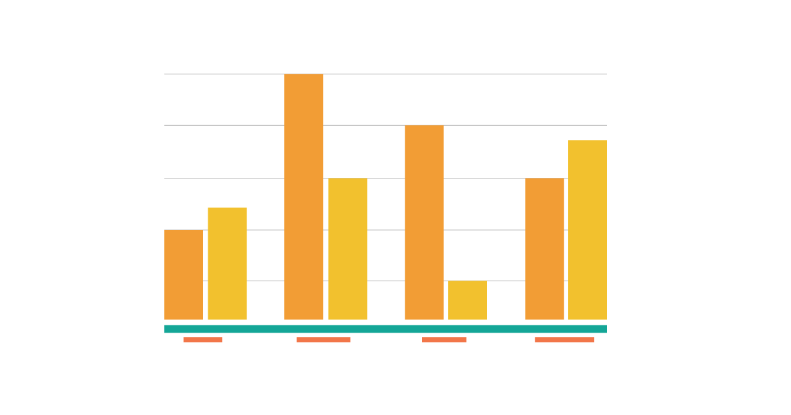

|
Zhuofan Jia
I am a PhD student in Computer Science at Duke University, advised by
Prof. Jian Pei. My research interests are in large language models,
model evaluation and benchmarking, conversational AI, data privacy and
unlearning, uncertainty-aware data valuation, and responsible AI.
Email /
CV /
Scholar /
LinkedIn
|
|
Research
I am interested in LLM evaluation, multi-party conversation generation,
privacy-preserving language modeling, and uncertainty-aware data valuation.
|
|

|
MPCEval: A Benchmark for Multi-Party Conversation Generation
Minxing Zhang, Yi Yang, Zhuofan Jia, Xuan Yang, Jian Pei, Yuchen Zang, Xingwang Deng, Xianglong Chen
Under Review (KDD), 2026
arXiv
A unified benchmark for both next-turn prediction and global multi-party conversation evaluation,
with metrics for speaker selection, coherence, novelty, and agenda progression.
|
|
|
Scalable Private Information Management in Large Language Models
Minxing Zhang, Zhuofan Jia, Aritra Guha, Yaron Kanza, Jian Pei, Divesh Srivastava
Under Review (VLDB), 2026
arXiv
A kNN-LM framework that separates public training from private retrieval,
enabling user-level deletion while preserving QA performance.
|
|
|
Shapley Value on Uncertain Data
Zhuofan Jia, Jian Pei
Under Review (TKDE), 2026
arXiv
An uncertainty-aware Shapley framework for fair data attribution,
with variance-adaptive Monte Carlo estimators for efficient valuation.
|
|
|
VeriSMS: A Message Verification System for Inclusive Patient Outreach against Phishing Attacks
Chenkai Wang, Zhuofan Jia, Hadjer Benkraouda, Cody Zevnik, Nicholas Heuermann, Roopa Foulger, Jonathan A. Handler, Gang Wang
CHI, 2024
paper
An inclusive message verification workflow that helps users detect phishing content
with high precision and strong usability.
|
|
|
Parallelizing Reinforcement Learning
Jonathan T. Barron, Dave Golland, Nicholas J. Hay
Technical Report, 2009
bibtex
Markov Decision Problems which lie in a low-dimensional latent space can be decomposed,
allowing modified RL algorithms to run orders of magnitude faster in parallel.
|
|
|
Fine-Tuning and Evaluation of Small LLMs
Large Language Models, 2025
details
Fine-tuned Gemma-3-270M using SFT and LoRA/QLoRA, integrated DPO/RLHF and RAG,
and achieved strong gains on TriviaQA and ARC-C over zero-shot baselines.
|
|
|
Benchmarking LLM Agents on False Hypothesis Rejection
Large Language Model Agents, 2025
details
Built a benchmark for hypothesis falsification and evaluated agent reasoning pipelines
on rejection accuracy, efficiency, and bias.
|
|
Patents
|
Dwell Time Modelling for Point of Interests (US Patent Application 19/342094, 2025)
Trip Data Privacy Based on Obfuscation (US Patent Application 19/313266, 2025)
|
|
Academic Service
|
Reviewer, ACM Transactions on Knowledge Discovery from Data (TKDD), 2025
|
|
Teaching
|
Teaching Assistant, CompSci 516 Database Systems, Duke (Spring 2025)
Teaching Assistant, CompSci 316 Introduction to Databases, Duke (Fall 2024)
Course Assistant, CS 446 Machine Learning, UIUC (Spring 2023)
Course Developer, CS 374 Intro to Algorithms and Models of Computation, UIUC (Fall 2022 - Spring 2023)
Course Assistant, CS 125 Intro to Computer Science, UIUC (Spring 2020 - Fall 2020)
|
|